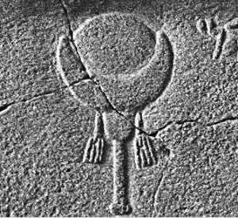
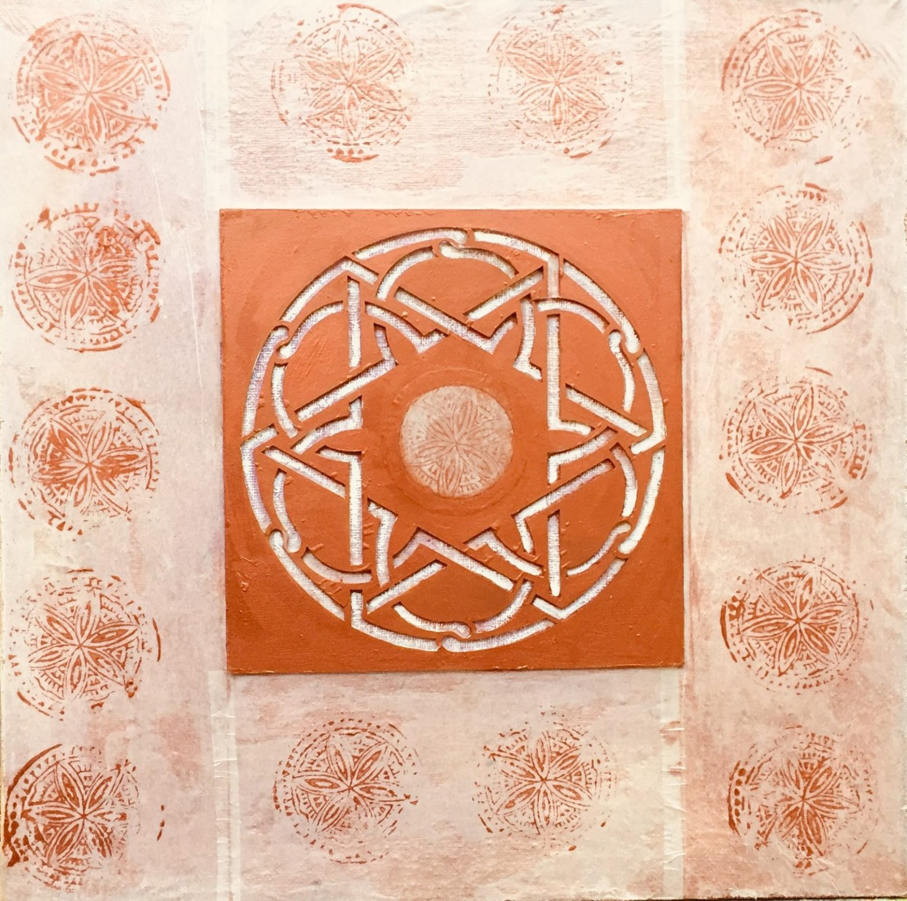

Islam

AllahProphet Muhammad, born in Mecca around 570 CE, is regarded as the final prophet in Islam. Muslims believe that Muhammad received revelations from God through the angel Gabriel over a period of approximately 23 years. These revelations began when Muhammad was meditating in the cave of Hira, near Mecca, and continued until his death in 632 CE. The messages he received were eventually compiled into the Quran. When exploring the evolution of religious practices from pre-Islamic Arabia to the rise of Islam, it's important to understand the theological changes that took place. One key aspect of this transformation involves the deity Hubal, a moon god worshipped at the Kaaba in Mecca, and how his worship might have influenced the later reverence for Allah in Islam. Historical records show that Hubal was considered the chief god among the 360 idols housed at the Kaaba, which also served as the center of worship for other significant deities like Al-Lat, Al-Uzza, and Manat—often referred to as the daughters of Allah in pre-Islamic tradition. These deities played an essential role in religious practices, including the act of circumambulating the Kaaba, a ritual that continued into Islamic practice but became solely focused on worshipping Allah. The connection between Hubal and Allah suggests that the shift to monotheism under Prophet Muhammad didn't introduce an entirely new god, but instead redefined the concept of the divine within a monotheistic framework. This view emphasizes continuity rather than a complete break, arguing that pre-Islamic moon worship influenced the development of Islamic theology. The transition from polytheism to monotheism, with a focus on one all-powerful God and the rejection of other deities, marks a major change in the religious landscape of Arabia. The Triple GoddessesDeities and Rituals of Pre-Islamic Arab PaganismThe crescent moon, now widely associated with Islam, has deep historical ties to pre-Islamic Arabian and Mesopotamian paganism. The use of the crescent as a symbol of the divine is linked to the worship of moon deities like Hubal in Mecca, Sin in Mesopotamia, and Artemis in Greek tradition. According to Patricia Crone in her work Meccan Trade and the Rise of Islam, the crescent moon was a key emblem of these ancient deities, often appearing in religious iconography and rituals that celebrated the power and cycle of the moon (Crone, Meccan Trade and the Rise of Islam). The early Muslims, while purging polytheistic idols, still retained the crescent moon symbol atop the Kaaba and later mosques, possibly as a symbol of continuity, albeit reinterpreted under monotheism. Islamic use of the crescent moon above mosques and as a general emblem does not originate purely within Islamic tradition but has historical antecedents in earlier Arabian paganism. In pre-Islamic Arabia, the moon was not only associated with the deities like Hubal but was also linked to fertility and cyclical time—concepts that persist in Islamic symbology. The alignment of these ancient symbols with the later Islamic empire and its visual culture reflects the syncretic nature of religious practice, where earlier symbols were adapted into a new theological context. The crescent moon and star symbol, now recognized globally as an emblem of Islam, also carries astrological significance. In pre-Islamic cultures, the star, often depicted as Venus, was a key symbol associated with fertility and the cycles of nature. It is important to note that in the ancient Near East, the star was frequently paired with the moon in the imagery of deities of fertility, particularly the goddess Ishtar and Astarte. Scholars like Elaine Pagels in The Gnostic Gospels discuss how Venus (the morning star) was often linked to goddesses of fertility and love. The pairing of the crescent moon with the star in Islamic symbolism may echo these ancient associations, though Islam reinterprets them within the framework of monotheism. Thus, the crescent moon and star might symbolize a duality of cosmic order (the moon) and divine enlightenment (the star), a merging of ancient symbolism into a new, religiously redefined form. This symbolism was also prevalent in the Byzantine Empire, where the crescent moon and star were used in the iconography of goddesses of the moon, notably Selene, and was later absorbed into Islamic culture as the Ottoman Empire, which saw the crescent as a symbol of its power, spread. Pre-Islamic Arab paganism was rich with deities, notably the goddesses Al-Lat, Al-Uzza, and Manat, often worshipped as a triple goddess. Hubal, associated with the moon, was another prominent deity. Rituals involved idol worship and veneration of stones and crystals. The Kaaba, now a central Islamic site, originally served as a major pagan shrine where rituals included topless circling, dancing, and singing praises to the goddesses. The incident of the Satanic Verses, also known as the Gharaniq incident, refers to an episode in the life of Prophet Muhammad when he seemingly acknowledged the existence and intercessory power of three Meccan deities: Al-Lat, Al-Uzza, and Manat. This occurred around 613 CE, during a time when Muhammad was trying to gain the acceptance of the Quraysh tribe in Mecca, who were initially resistant to his monotheistic message. According to various early Islamic sources, Muhammad was reciting Sura An-Najm (Chapter 53) when he reached verses 19 and 20: “Have you considered Al-Lat and Al-Uzza and Manat, the third, the other?” It is said that Satan influenced Muhammad to continue with the words: “These are the exalted cranes (gharaniq), whose intercession is hoped for.” This statement pleased the Quraysh, as it appeared to recognize the divinity and intercessory power of their traditional deities. The immediate reaction to this utterance was significant. The Quraysh, who had been hostile to Muhammad’s teachings, were reportedly pleased and accepted the proclamation. This led to a momentary reconciliation between Muhammad and the Quraysh, with reports stating that both Muslims and pagans prostrated together in a rare moment of unity. The incident of the Satanic Verses has been widely documented by early Islamic historians and biographers, including Ibn Ishaq, Ibn Hisham, and Al-Tabari. These accounts provide a detailed narrative of the event, though it remains controversial among Muslim scholars. Some later Islamic scholars and theologians have questioned the authenticity of the incident, arguing that it contradicts the infallibility of the Prophet. The theological inconsistencies between Islam and the Judeo-Christian traditions become even clearer when comparing their views on Jesus. Islamic theology portrays Jesus (Isa) as a prophet, but denies his divinity and crucifixion—central tenets of Christianity. According to Islamic scholar Muhammad al-Ghazali, the Quran insists that Jesus was not crucified, a direct contradiction to the Christian teaching that Jesus' death on the cross was an essential act of salvation (Ghazali, The Incoherence of the Philosophers). Studies by John Esposito and Karen Armstrong have noted that the Islamic rejection of the crucifixion underscores a fundamental divergence from Christianity and a significant theological reworking of Jewish and Christian narratives. The rejection of Jesus' divinity positions Islam outside of the traditional Abrahamic faiths, which recognize Jesus as central to salvation. Therefore, while Islam claims continuity with the Abrahamic tradition, it introduces a significant theological break by altering the narrative of Jesus' life and death (Esposito, Islam: The Straight Path; Armstrong, Muhammad: A Prophet for Our Time).
The Quran presents a profound and respectful view of Jesus, acknowledging his miraculous birth, his powerful miracles, and his sinlessness. Despite these attributes, which align closely with divine characteristics, the Quran positions Muhammad as the final and most significant prophet, tasked with delivering the ultimate revelation. Muslims often defend the uniqueness of Jesus' virgin birth by comparing it to the creation of Adam. They argue that just as Adam was created without parents, Jesus was born without a father (Surah Al-Imran, 3:59). However, this comparison has limitations. Adam's creation was unique as he was the first human, and there was no other way to bring the first human into existence. In contrast, Jesus' miraculous birth stands out because it occurred within the established natural order of human reproduction, making it a distinct and unparalleled event. Additionally, if Jesus is considered to have a divine aspect due to his virgin birth, it contradicts the characteristics of a normal prophet, positioning Jesus as a demigod, which challenges the strict monotheism of Islam. Is Islam Abrahamic?I don’t believe Islam can be classified as an Abrahamic religion, especially when considering its rendition of the story of Adam and Eve, the prophets, Israel, characteristics of God and Jesus. In the Quran, the tale of Adam and Eve diverges significantly from the Biblical account. According to Islamic tradition, after creating Adam from clay, God commanded all the angels to bow down to him. However, Iblis (Satan), out of pride and arrogance, refused to comply, asserting his superiority as a being created from fire. This act of defiance led to his expulsion from Heaven and his subsequent enmity towards humanity. This narrative, from the outset, contradicts the established character of God, who has declared that He never shares His glory with another and has never punished any creature for refusing to bow down to a man. The distinct elements in this narrative, particularly the emphasis on Iblis’ refusal to bow, highlight theological differences that set Islam apart from its supposed Abrahamic counterparts. These variations call into question the extent to which Islam aligns with the core narratives and doctrines of Judaism and Christianity. The differences we observe in the Adam and Eve narrative do not just stop there; they extend to other characters and stories found in the doctrines of Judaism and Christianity. The Quran presents its version of these narratives, and people are expected to accept them as the most accurate or "uncorrupted" versions simply because the Quran asserts so. There is no evidence or explanation provided as to why the Judaic and Christian texts are considered corrupted. While I understand why the Quran needs these characters and stories to establish a strong foundation for a newly emerging religion, this does not necessarily make it true or authoritative. I also question the concept of a "last prophet" as presented in Islam, especially given the ongoing need for prophetic voices to address the sins of nations and guide people towards repentance. In the Old Testament, prophets not only conveyed divine messages but also actively warned kings and people of their time, emphasizing immediate relevance to their contemporary society. I believe he declared himself, or was declared by his followers, as the last prophet to preempt future claims of prophethood. This precaution was necessary to prevent confusion and contradictions within Islamic belief, which could arise if someone else claimed to receive divine revelations after Muhammad. Such a scenario would lead to discrepancies between the original Quran and any new revelations, potentially delivered by someone claiming to have communicated with the angel Michael, for example. While this move effectively prevented such confusion, it does not necessarily validate the truth of his prophethood or confirm that he was sent by the true God of Abraham, Jacob, and Isaac. From my perspective, Muhammad can be seen as the first and last prophet of Islam. His narrative in the Quran, while drawing inspiration from Judeo-Christian stories, appears to be rebranded in a manner that serves the interests of the deity he represented, which I believe could be Hubal or another major deity previously worshipped in Mecca. This rebranding could be viewed as a strategic response to the monotheistic aspirations growing among the people of Arabia, who were surrounded by a multitude of deities. By adopting and modifying existing religious narratives, Muhammad may have created a more compelling and authoritative religious framework, thus avoiding the mere addition of another idol to the pantheon and instead establishing a singular, supreme deity. I see a similar phenomenon in the development of Mormonism, a denomination that I do not consider to be part of Abrahamic traditions or even a branch of Christianity. Joseph Smith, the founder of Mormonism, recognized the American fascination with national identity. I can imagine that some Americans, upon reading the Bible and desiring to embrace Christianity, were disconcerted by the fact that its central characters were Middle Eastern. By introducing an American prophet and adapting the storyline to cater to the spirit guiding him, Joseph Smith created yet another "Abrahamic" religion, uniquely tailored to American sensibilities. This new narrative, featuring an American prophet, resonated with those who wished to see their national identity reflected in their religious beliefs. Ironically, this denomination also permitted practices such as polygamy. In both Islam and Mormonism, I see how religious movements can adapt and reinterpret existing religious frameworks to resonate with the cultural and nationalistic sentiments of their target audiences. By integrating familiar elements with novel adaptations, these movements have established themselves as distinct yet rooted in broader religious traditions. Islamic Art and Hindu MandalasIslamic art is renowned for its intricate geometric patterns, which serve both an aesthetic and spiritual function. These patterns, often found adorning mosques and other Islamic architecture, are deeply symbolic, reflecting the Islamic principle of Tawhid—the unity and oneness of God. The patterns frequently feature repeated motifs such as stars, circles, and polygons, all of which are designed to lead the observer to a contemplation of the infinite, a core aspect of Islamic spirituality. This emphasis on geometry as a gateway to the divine bears striking similarities to the Hindu practice of creating mandalas. The use of geometric patterns in both Islamic and Hindu traditions reflects a shared understanding of the universe as an ordered, harmonious system. According to Islamic scholar Yasir Qadhi, the Islamic use of geometry is not merely an aesthetic choice but serves to embody the oneness of God, with every line and shape symbolizing God's perfect order and infinity. The abstract nature of Islamic geometric art, which avoids depictions of living beings, reflects the belief that the divine cannot be contained in physical form. The use of repeating patterns in Islamic art emphasizes the eternal nature of the divine and encourages reflection on the infinite nature of God's creation (Qadhi, The Art of Islam: A Study of Islamic Art and Architecture). In Hinduism, the mandala serves a similar purpose of symbolizing cosmic unity and the spiritual journey towards enlightenment. Scholars like Mircea Eliade in his book The Sacred and the Profane argue that mandalas in Hinduism represent the cosmos and the individual's journey towards divine unity, offering a visual representation of the infinite nature of the universe. Just as Islamic geometric patterns guide the viewer towards contemplating the infinite, Hindu mandalas invite the observer into a meditative space where the infinite is represented in a finite, geometrically structured form (Eliade, The Sacred and the Profane). In both traditions, the use of symmetry and repetition creates a sense of cosmic harmony. The eight-pointed star, which appears in both Islamic art (particularly the Rub el Hizb symbol) and Hindu mandalas, is a perfect example of this shared symbolism. The eight points represent balance, unity, and the cyclical nature of existence, embodying the dual forces of creation and destruction that are central to both Islamic and Hindu worldviews. According to Fredric Spiegelberg, these geometric symbols are not just decorative but are integral to the meditative and spiritual practices of both faiths (Spiegelberg, The Hindu and Buddhist Arts). Furthermore, color symbolism plays a key role in both Islamic and Hindu geometric art, reinforcing the spiritual and symbolic significance of the patterns. In Hinduism, colors like blue symbolize infinity and the divine, red represents power and vitality, and yellow signifies enlightenment. Similarly, Islamic geometric art often uses colors to signify various spiritual truths, enhancing the meditative experience of the viewer (Spiegelberg, The Hindu and Buddhist Arts). This use of color in both traditions highlights the symbolic importance of geometry not just as a visual language but as a tool for spiritual reflection. One of the shared rituals that highlight the connection between these traditions is the circumambulation of sacred structures. In Islam, circumambulation around the Kaaba in Mecca is a central ritual, symbolizing the unity of believers in worship of the one God. In Hinduism, similar practices are observed around temples or sacred fires, symbolizing devotion and the cyclical nature of life. These connections suggest that both Islamic and Hindu traditions, though outwardly different, share a profound appreciation for the symbolic power of geometry, using it as a means to express and experience spiritual truths. This deep connection between the two, particularly in their art, challenges the notion that Islam stands entirely separate from other religious traditions like Hinduism. It's also notable that many individuals who experience psychedelic drugs often report that their visions include patterns resembling the geometric designs mentioned earlier. Many of these individuals, particularly those from atheist backgrounds, tend to shift toward spiritualism after such experiences. This shift frequently leads them to practices like tarot reading and other forms of pagan rituals, often in an attempt to reconnect with the sensations they encountered during their drug-induced state. Even some who come from Christian backgrounds may abandon their faith, lured by the thrill of encountering these entities. This serves as strong evidence that such practices are not aligned with the God of Israel. The Torah instructs us to meditate on its teachings to lead a righteous life, not for personal inspiration or to seek guidance for the next book we’re trying to publish. While the differences between Islamic and Hindu theology are undeniable, the shared use of geometric symbolism in art suggests a deeper metaphysical connection that transcends religious boundaries. As scholars like William Chittick have pointed out, the use of symmetry, balance, and divine patterns in both Islamic and Hindu art reflects a universal human desire to understand and represent the cosmos, the divine, and the self. The geometric patterns in both traditions serve as a spiritual language, guiding practitioners toward understanding the underlying unity of existence. This shared focus on geometry as a means to understand the divine suggests that both traditions, despite their distinct theological frameworks, engage in a similar spiritual pursuit of harmony and enlightenment (Chittick, The Sufi Path of Love). ReflectionWhile I acknowledge that a sincere commitment to Allah can lead to excellent discipline in prayer and practices, and it can foster a sense of personal well-being and community improvement, I’m concerned that these efforts may ultimately be in vain—especially if one believes they're serving the true God of Israel. I believe it's possible that Muslims, in their strong commitment to good works and prayers, may overlook a deeper examination of the characteristics of the God they serve, as well as the core beliefs of their faith. This makes me wonder if this was intentional when Islam was established—focusing on actions that earn rewards for heaven is easier than fully analyzing the nature of God or questioning His authority. Islam itself claims to be part of a tradition that predates the religion, but how can one be sure of this if they have no knowledge of the God worshiped before Islam? The Quran does not provide enough clarity on the alleged corruption of the Hebrew and Christian scriptures. Given this, I believe it is crucial for Muslims to examine the scriptures that predate Islam—the Hebrew Bible and the Christian New Testament—and compare them with the Quran. By doing so, one can make an informed judgment about the faith they follow. At the very least, it is important to be familiar with the Hebrew and Christian scriptures, as they have been considered the word of God for over 2,600 years before Muhammad. Understanding the character of the God of Israel, before Muhammad, is essential. But since many Muslims are comfortable with the new revelation, they may hesitate to read the old scriptures, fearing it might challenge what they’ve been taught. This isn’t just an issue for Muslims—it also happens with Christians. Many focus so much on the New Testament that when critics raise questions about the Old Testament, which makes up 75% of the Bible, they struggle to respond. For Muslims, focusing on works as a path to salvation might distract them from truly understanding the character of the God their faith is built on. If someone truly wants to understand the God of Abraham, they should start with the Hebrew and Christian scriptures. But instead, Islam teaches that everything before Muhammad is to be rejected. Even though the Quran doesn’t explicitly say the whole Bible is corrupted, it’s important for Muslims to learn about their religious history by looking at the scriptures that came before. If I were Muslim, I wouldn’t hold the Hadiths as absolute truth either—especially when they try to explain Quranic stories. The Quran claims to be the uncorrupted word of God, so mixing that with human interpretations doesn’t make sense. Many Hadiths contradict the Quran, and the ones that don’t align are often dismissed as unreliable. The God of Israel and Allah are not the same. First of all, "Allah" isn’t even a personal name—it’s just a title that means "The God." The God of Israel has personal names, like YHWH, and He introduced Himself to Moses as “I AM THAT I AM,” a name both Jews and Christians agree on. Muslims reject these names and claim they have a better, uncorrupted version of the truth, settling on the title Allah instead. The God of Israel is portrayed as a loving Father who desires a personal relationship with His people. In contrast, Allah is more distant, hidden behind veils, and imposes strict demands on his followers. The God of Israel knows that no one can live a perfect life to earn salvation, which is why salvation is a gift. He came to earth in the form of Jesus, living a perfect life for humanity, so anyone who trusts in Him can have eternal life. Additionally, the crescent moon and star found on top of mosques remind me of pre-Islamic Arabian traditions. The moon symbol was significant in ancient Arab cultures, where moon gods and goddesses, like Hubal, were worshiped. In fact, the number of idols around the Kaaba once numbered 360—coincidentally, the same number of degrees in a circle, which Muslims reenact when they circumambulate the Kaaba. It feels like these ancient symbols have persisted, disguised as representations of the God of Israel, and are still being honored today through the energy, prayer, and devotion of modern Muslims. ConclusionBased on the arguments presented, it becomes clear that Islam, while claiming to be a continuation of the Abrahamic faiths, shares significant structural and ritualistic elements with pre-existing religious traditions, including Hinduism and Arabian polytheism. The incorporation of pagan practices, such as the circumambulation of the Kaaba and the use of moon symbolism, suggests that Islam, like many religious movements, adapted and reinterpreted existing cultural practices to create a unified theological framework. By integrating aspects of pre-Islamic paganism, Islam forms a distinct identity, which challenges its claim to be the pure continuation of Abrahamic faith. The theological and historical analysis provided here supports the argument that Islam’s foundation, while drawing on Abrahamic figures, ultimately diverges from the original Judeo-Christian understanding of God and revelation. In crafting this page, my intention is to present a reasoned and thorough examination of why I do not adhere to Islamic theology. By highlighting historical inconsistencies, theological ambiguities, and similarities with other religious practices, I aim to provide a perspective that encourages critical thinking and deeper exploration of religious beliefs. While I respect the faith of others, my analysis leads me to conclude that Islam, as it stands, does not align with the traditional Abrahamic framework and lacks the foundational strength to be considered a pure continuation of those ancient traditions. |